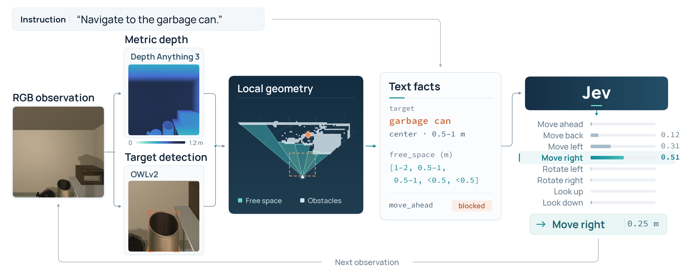

DepthJev converts every RGB frame into metric depth and target detections, then writes them as short text facts. The decision model never sees the image, and still navigates.
Monocular metric depth and open-vocabulary detection become a compact, metre-level description of the scene. Jev reasons over that description and returns one of eight navigation actions.

Depth Anything 3 estimates metric depth; OWLv2 finds the target in the frame.
Free space in five sectors, a 0.25 m collision check, target distance and recent actions become text facts.
Jev reads the facts, picks one action, and the loop repeats with the next observation.
An example. Everything the decision model knows about the room is in this JSON.
{ "task": {"target_object": "garbage can", "step": 1, "steps_left": 20}, "target": {"visible": true, "sector": "right", "distance": "1 to 2 m"}, "free_distance_ahead_by_sector": { "far_left": "1 to 2 m", "left": "1 to 2 m", "center": "over 2 m", "right": "0.5 to 1 m", "far_right": "0.5 to 1 m" }, "move_check": {"move_ahead": "clear", "move_back": "unknown", ...}, "move_ahead_check_saw_the_floor": false, "camera_pitch": "level", "recent_actions": [] }
Success rate on all 300 EB-Navigation episodes. Every other agent passes the image to its decision model; DepthJev passes only text facts.
Baselines from Table 3 of the EmbodiedBench paper. DepthJev evaluated on one H100.
Selected steps of a common_sense episode: target sector, distance and the chosen action.
Most failures come from detection and local motion, not from the decision model misreading the facts.
A server environment for perception and Jev, an evaluation environment for EmbodiedBench, and one script to run both.
git clone https://github.com/ZJUCQR/DepthJev.git && cd DepthJev git clone https://github.com/EmbodiedBench/EmbodiedBench.git repos/EmbodiedBench git clone https://github.com/ByteDance-Seed/Depth-Anything-3.git repos/Depth-Anything-3
conda create -y -p envs/depthjev python=3.11 pip conda activate ./envs/depthjev pip install -r requirements.txt hf download depth-anything/DA3METRIC-LARGE --local-dir checkpoints/DA3METRIC-LARGE hf download google/owlv2-base-patch16-ensemble --local-dir checkpoints/owlv2-base-patch16-ensemble
conda create -y -p envs/depthjev-eval python=3.9.21 pip conda activate ./envs/depthjev-eval pip install -r requirements-eval.txt
sudo apt-get install -y --no-install-recommends xvfb x11-utils libgl1-mesa-dri libgl1-mesa-glx \
libglu1-mesa libxcursor1 libxrandr2 libxinerama1 libxi6 libxxf86vm1
cp .env.example .env # then fill in TYPESAFE_API_KEY bash scripts/run.sh # smoke test, 3 base episodes bash scripts/run.sh full --sets all --ratio 1 # all 300 episodes, about 2.2 h bash scripts/run.sh full --sets all --ratio 1 --parallel # one server per subset